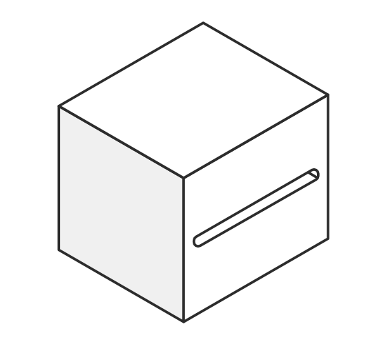
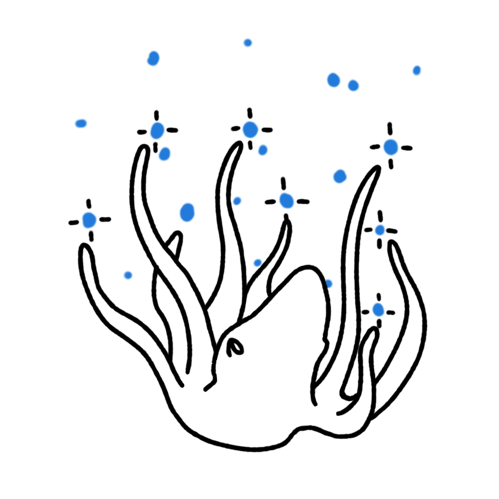
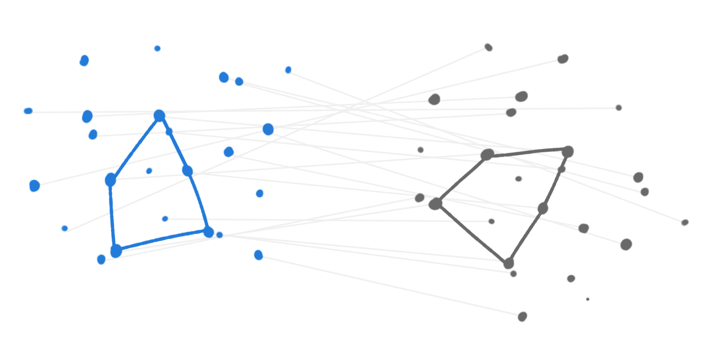
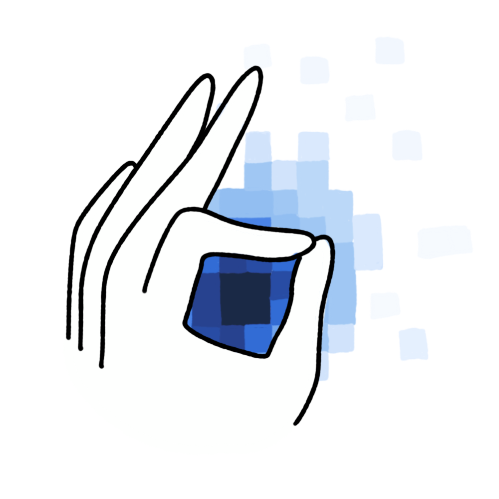
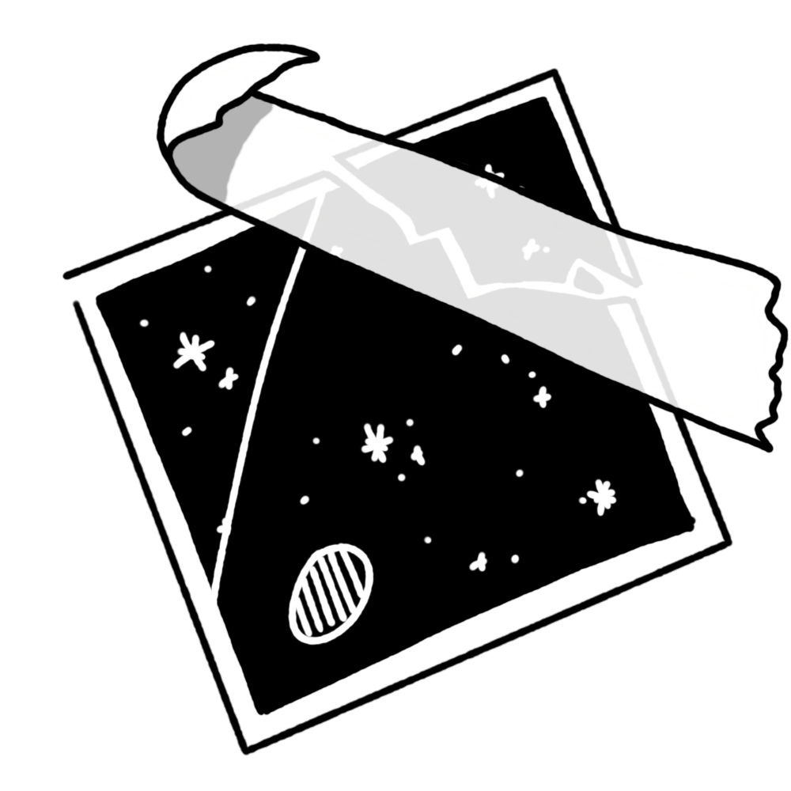

Blocks#
{kind=link}
A Block is a single unit of processing acting on the Image object, reading and writing its attributes. Blocks documentation include the following information:
reads: the
Imageattributes read by theBlockwrites: the
Imageattributes written by theBlockmodifies data: indicates that the
Image.datais modified by theBlock
Detection#
{kind=link}
Stars detection based on image segmentation. |
|
Source Extractor detection |
|
DAOPHOT stars detection with |
PSF#
Extract square image cutouts centered on |
|
Get median psf from image. |
|
Fast empirical FWHM |
|
Fit an elliptical 2D Gaussian model to an image effective PSF |
|
Fit an elliptical 2D Moffat model to an image effective PSF |
|
Fit a symetric 2D Gaussian model to an image effective PSF |
Alignment, Centroiding#
{kind=link}
Compute the linear shift between two point clouds. |
|
Affine transform computation for images registration |
|
Apply an affine transformation to image and/or stars |
|
TODO: change name of this. |
Centroiding using |
|
Centroiding using |
|
Centroiding using |
|
Centroiding with ballet. |
Photometry#
{kind=link}
Aperture photometry using the |
|
OUTDATED - TODO |
Utils#
{kind=link}
Flat, Bias and Dark calibration |
|
Extract square image cutouts centered on |
|
Flip an image according to a reference |
|
Stores the last Image |
|
A Block that does nothing |
|
Save reduced FITS images. |
|
Sets specific attribute to every image |
|
Build a FITS stack image of the observation |
|
Image trimming. |
|